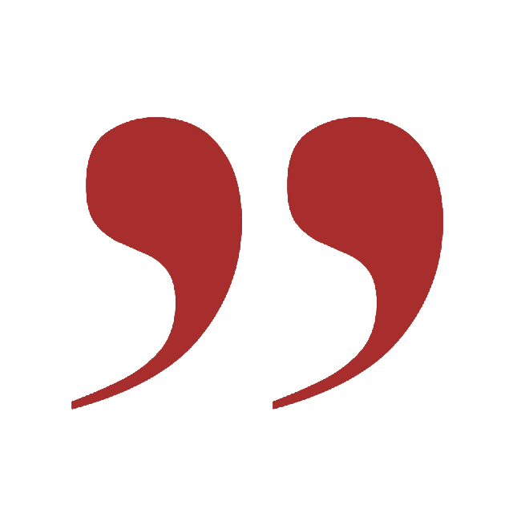

Kim jesteśmy?
Projekt „Ambition Link" ma na celu zbudować platformę, w formie witryny internetowej, umożliwiającej wyszukiwanie wielu wydarzeń np. Konferencji, konkursów, projektów. Zmieni ona nastawienie ludzi do samokształcenia i pozwoli im znaleźć radość z nauki, współpracowników do projektu i różne formy samorozwoju

Konferencje
Konkursy
Projekty
Wolontariaty
Webinary
Meet-upy
Warsztaty
Konferencje
Konkursy
Projekty
Wolontariaty
Webinary
Meet-upy
Warsztaty

We connect people
with their ambitions We connect people
with their ambitions We connect people
with their ambitions

Brak motywacji
do rozwoju
Często tracimy siły i motywację do nauki, która staje się dla nas przytłaczającym obowiązkiem, lecz mamy poczucie, że jeśli ich nie wypełnimy, będzie to miało wpływ na naszą karierę do końca życia. Odczuwamy jeszcze większe zniechęcenie - niezależnie od tego jak bardzo będziemy się starali, w wieli przypadkach nie będziemy w stanie sprostać oczekiwaniom.
Wewnętrzna presja
i poczucie winy
Oczekujemy od siebie perfekcji w każdym aspekcie naszego życia, mimo iż jest to niemożliwe do zrealizowania, a gdy dostrzegamy nasze niedociągnięcia, popadamy w jeszcze większe poczucie winy
Trudny dostęp do informacji
i ofert dotyczących samorozwoju
Projekt „Ambition Link" ma na celu zbudować platformę, w formie witryny internetowej, umożliwiającej wyszukiwanie wielu wydarzeń np. Konferencji, konkursów, projektów. Zmieni ona nastawienie ludzi do samokształcenia i pozwoli im znaleźć radość z nauki, współpracowników do projektu i różne formy samorozwoju